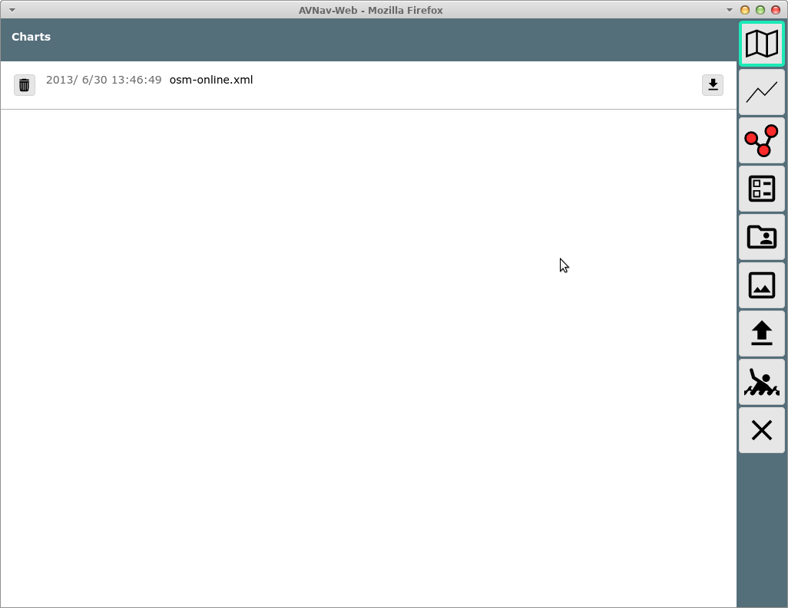
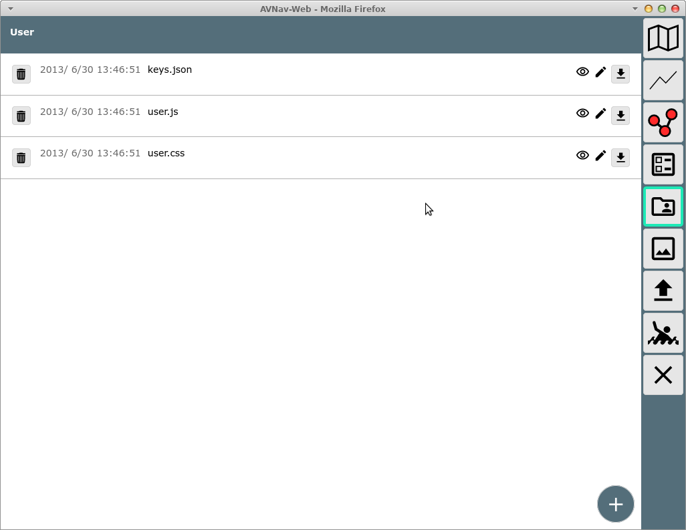
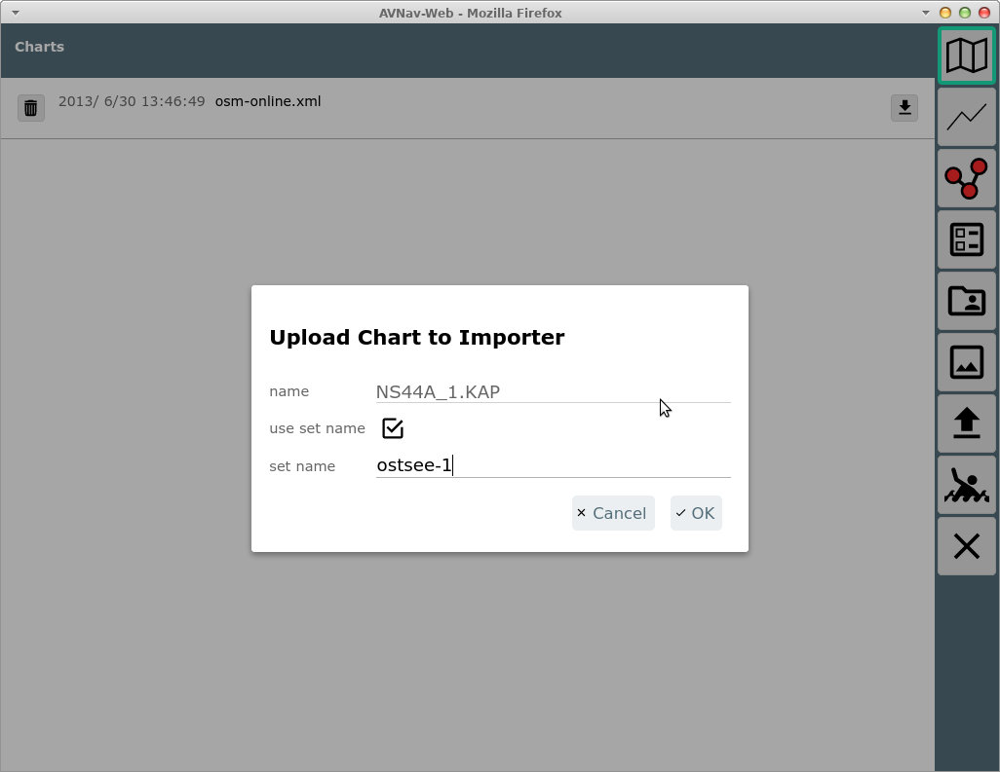
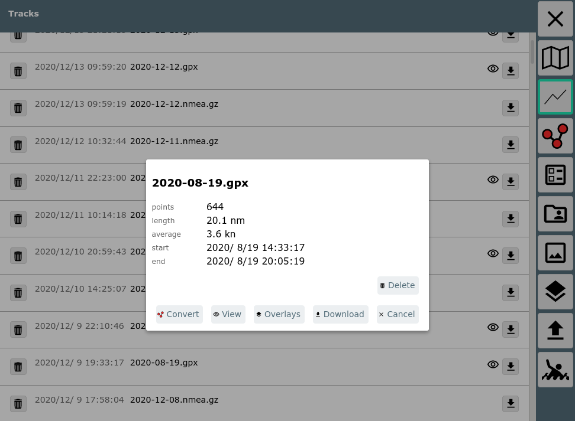

Von der Startseite kommt man mit dem  Button zur Files/Download Seite. Auf dieser Seite kann man Karten, Tracks,
Routen, Layouts, Nutzer-Dateien, Bilder herunterladen oder auf den
Raspberry (Server) hochladen und sie dort auch löschen. Für einige Dateien
ist auch eine direkte Bearbeitung möglich.
Button zur Files/Download Seite. Auf dieser Seite kann man Karten, Tracks,
Routen, Layouts, Nutzer-Dateien, Bilder herunterladen oder auf den
Raspberry (Server) hochladen und sie dort auch löschen. Für einige Dateien
ist auch eine direkte Bearbeitung möglich.

| Icon | Name | Funktion |
| DownloadPageCharts | Anzeige der Liste der Karten | |
| DownloadPageImporter | Anzeige der Import Seite |
|
| DownloadPageTracks | Anzeige der Liste der Tracks | |
| DownloadPageRoutes | Anzeige der Liste der Routen | |
| DownloadPageLayouts | Anzeige der Liste der Layouts | |
| DownloadPageUser | Anzeige der Liste der Nutzerdateien | |
| DownloadPageImages | Anzeige der Liste der Nutzer-Bilder | |
| DownloadPageOverlays | Zeige die Liste der Overlay Dateien | |
| DownloadPageUpload | Hochladen einer Datei für die gerade angezeigte Kategorie | |
| MOB | Mann über Bord (siehe Hauptseite) | |
| Cancel | Zurück zur vorigen Seite |
In der angezeigten Liste stehen einige Informationen zum jeweiligen
Eintrag und es gibt einen  Löschen und einen
Löschen und einen  Download Button. Diese aber nur, wenn es das
jeweilige Element erlaubt (z.B. kein Löschen von demo charts oder
system-Layouts).
Download Button. Diese aber nur, wenn es das
jeweilige Element erlaubt (z.B. kein Löschen von demo charts oder
system-Layouts).
Potentiell werden noch weitere Icons angezeigt, die die Bearbeitungsoptionen darstellen. Beim Klick auf ein Element in der Liste öffnet sich ein Dialog mit den verfügbaren Optionen.

Falls angeboten ("Edit" / "View") kann hier zu einer Anzeige- / Bearbeitungsansicht gewechselt werden. Für Routen öffnet man damit den Routen-Editor.
 tocAuf dieser
Seite können Änderungen vorgenommen werden (Überschrift "Editing") oder
der Inhalt wird angezeigt. Durch Klick auf
tocAuf dieser
Seite können Änderungen vorgenommen werden (Überschrift "Editing") oder
der Inhalt wird angezeigt. Durch Klick auf  werden Änderungen gespeichert.
werden Änderungen gespeichert.
Wenn zur Ansicht  Nutzer Dateien gewechselt wurde, können hier
unter anderem die Datei user.js und user.css angesehen und bearbeitet
werden.
Nutzer Dateien gewechselt wurde, können hier
unter anderem die Datei user.js und user.css angesehen und bearbeitet
werden.
Die Datei keys.json ermöglicht nutzerspezifische Tastaturkürzel.
Mit der Datei images.json kann man Symbole anpassen.

Auf dieser Seite können auch weitere Dateien hochgeladen werden, die für
die Anpassung von avnav benötigt werden (z.B. css Dateien, java script
files oder auch HMTL Dateien). Diese Dateien sind jeweils über die URL
/user/viewer/<name> erreichbar.
Bilder sollten vorzugsweise in der Ansicht  hochgeladen werden und sind dann über
/user/images/<name> erreichbar.
hochgeladen werden und sind dann über
/user/images/<name> erreichbar.
Über den "+" Button unten rechts kann eine neue Datei angelegt werden. Das könnte z.B. eine HTML Datei sein, die dann zu einer User App gemacht werden soll.
Für eine HTML Datei enthält der Aktionen Dialog den Button " App", mit dem direkt eine User
App erzeugt werden kann (vorher muss allerdings ein Icon hochgeladen
worden sein).
App", mit dem direkt eine User
App erzeugt werden kann (vorher muss allerdings ein Icon hochgeladen
worden sein).

Bei einer Karte im mbtiles Format kann es sein, dass die Kacheln intern in einer anderen als der default Ordnung gespeichert sind. Der Default ist "xyz", optional gibt es "tms". Falls die Karte keine gültige Information enthält, wird "xyz" angenommen. Wenn eine solche Karte nicht korrekt dargestellt wird, kann man versuchen auf "tms" umzuschalten.

Diese Information wird dann dauerhaft in der Kartendatei gespeichert.
In der Kategorie  Karten können auch Karten Dateien
direkt hochgeladen werden. Dateien, die AvNav direkt verarbeiten kann
(gemf, mbtiles, xml files), werden direkt hochgeladen und können sofort
genutzt werden.
Karten können auch Karten Dateien
direkt hochgeladen werden. Dateien, die AvNav direkt verarbeiten kann
(gemf, mbtiles, xml files), werden direkt hochgeladen und können sofort
genutzt werden.
Für Karten, die erst nach Konvertierung nutzbar sind, wird angeboten, diese in das Eingangsverzeichnis des Importers zu laden (nicht unter Android).

Hierbei kann noch ein Name für ein "set" vergeben werden. Das wird dann
der Name der erzeugten gemf Datei, es können so mehrere Karten in eine
gemf Datei konvertiert werden. Der Zustand der Konvertierung kann
anschliessend auf der Import Seite
geprüft werden (diese wird automatisch geöffnet).
Nach einem Upload wartet der Importer noch eine gewisse Zeit, damit hat
man die Möglichkeit nacheinander mehrere Dateien hochzuladen, die dann
alle in einer Konvertierung bearbeitet werden.
Der Info Dialog für Tracks enthält zusätzliche Informationen.

Ausserdem kann hier über den Button  das Umwandeln
des Tracks in eine Route gestartet werden. Über den
das Umwandeln
des Tracks in eine Route gestartet werden. Über den  overlay button kann der Track zu Overlays
hinzugefügt oder gelöscht werden.
overlay button kann der Track zu Overlays
hinzugefügt oder gelöscht werden.